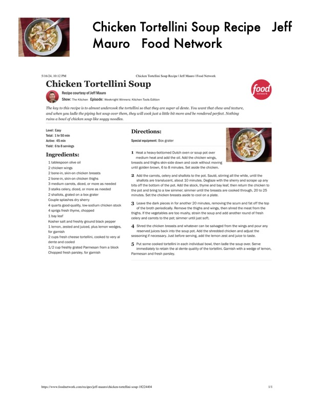

Chicken Tortellini Soup Recipe Jeff

Original cookbook page 592
Ingredients
- 1 tablespoon olive oil
- 2 chicken wings
- 2 bone-in, skin-on chicken breasts.
- 2 bone-in, skin-on chicken thighs
- 3 medium carrots, diced, or more as needed
- 3 stalks celery, diced, or more as needed
- 2 shallots, grated on a box grater
- Couple splashes dry sherry
- 4 quarts good-quality, low-sodium chicken stock
- 4 sprigs fresh thyme, chopped
- 1 bay leaf
- Kosher salt and freshly ground black pepper
- 1 lemon, zested and juiced, plus lemon wedges,
- for garnish
- 2 cups fresh cheese tortellini, cooked to very al
- dente and cooled
- 1/2 cup freshly grated Parmesan from a block
- Chopped fresh parsley, for garnish
- Chicken Tortellini Soup F
- Mauro Food Network
- Chicken Tortellini Soup Recipe | Jeff Mauro | Food Network
Instructions
- Special equipment: Box grater
- Heat a heavy-bottomed Dutch oven or soup pot over medium heat and add the oil. Add the chicken wings, breasts and thighs skin-side down and cook without moving until golden brown, 6 to 8 minutes. Set aside the chicken.
- Add the carrots, celery and shallots to the pot. Sauté, stirring shallots are translucent, about 10 minutes. Deglaze with the bits off the bottom of the pot. Add the stock, thyme and bay leaf the pot and bring to a low simmer; simmer until the breasts are minutes. Set the chicken breasts aside to cool on a plate.
- Leave the dark pieces in for another 20 minutes, removing t of the broth periodically. Remove the thighs and wings, then. thighs. If the vegetables are too mushy, strain the soup and add celery and carrots to the pot; simmer until just soft. 4, Shred the chicken breasts and whatever can be salvaged fro reserved juices back into the soup pot. Add the shredded chi
Recipe #592 from collection